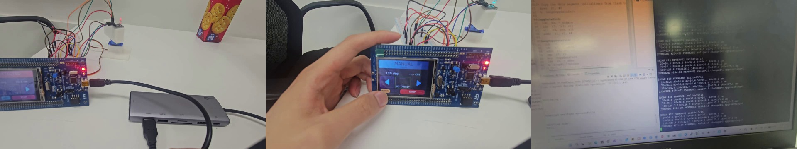
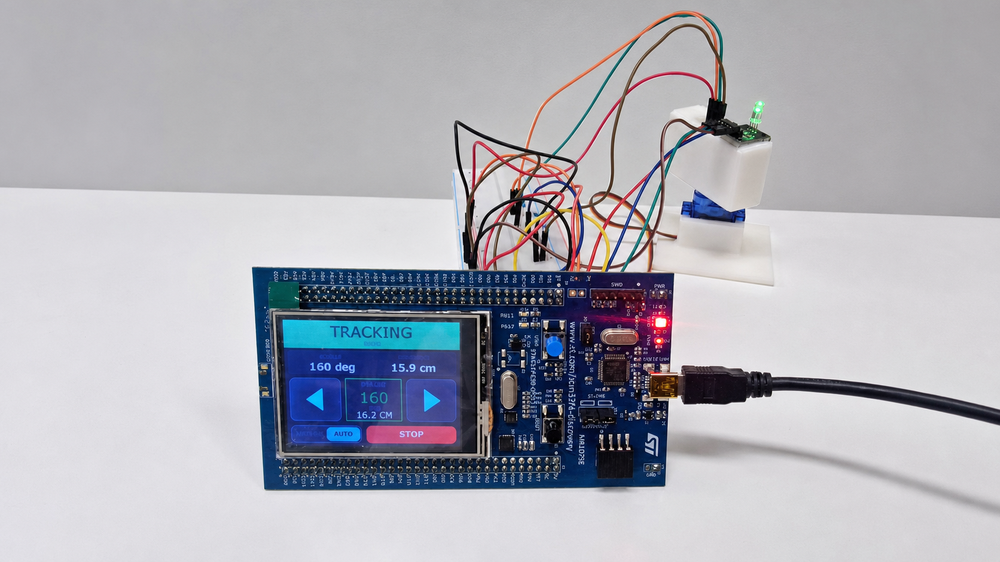
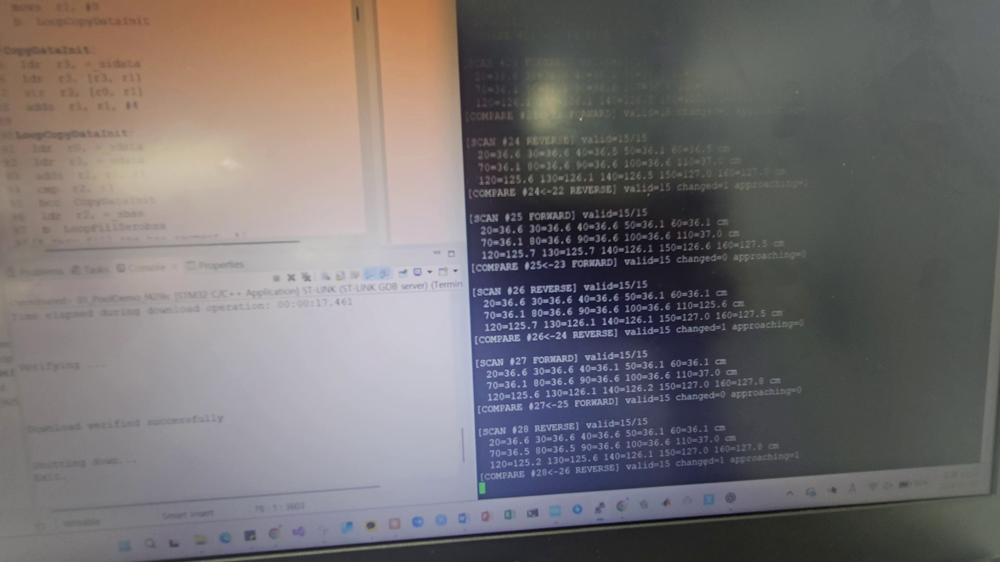

구동 후 측정
서보 이동 중 측정을 막고 안정화 이후 초음파 에코를 취득해 각도·거리 정합성 확보.
EMBEDDED · REAL-TIME SYSTEM
HC-SR04와 서보모터로 주변을 왕복 스캔하고, 접근 후보를 재검증한 뒤 추적·소실·재탐색을 반복하는 FreeRTOS 시스템.

01 / ARCHITECTURE
센서 측정, 서보 구동, 프레임 비교, 상태 판단, GUI 갱신을 분리하고 메시지 큐로 연결한 구조.
02 / DESIGN
서보 이동 중 측정을 막고 안정화 이후 초음파 에코를 취득해 각도·거리 정합성 확보.
한 번의 거리값 대신 같은 방향의 15포인트 프레임을 비교해 접근 물체 탐지.
인접 각도 연속성과 후보 위치 3회 재측정을 결합해 단발 노이즈 억제.
GUI 큐가 밀릴 때 오래된 상태를 버리고 최신 값만 표시해 화면 지연 방지.
03 / EVIDENCE

